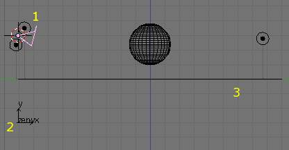
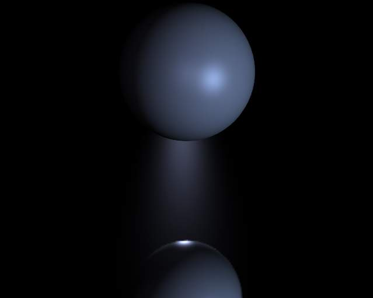
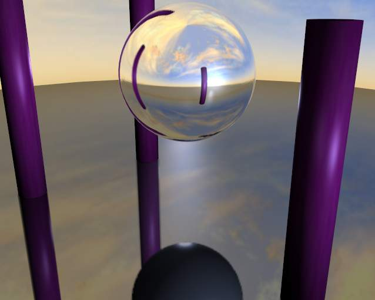
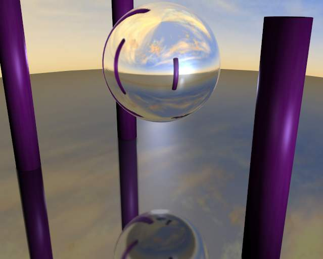

Environment Maps¶
Environment maps take a render of the 3D scene and apply it to a texture, to use for faking reflections. If you want to achieve a very realistic result, raytraced reflections are a good solution. Environment Maps are another way to create reflective surfaces, but they are not so simple to set up.
So why should one use Environment Maps?
- The main reason is probably that they can be much faster than raytracing reflections. In certain situations they need to be calculated only once, and may be reused like any ordinary texture. You may even modify the precalculated Environment Map in an image editor.
- Environment maps can also be blurred and render even faster because the resolution can then be lowered. Blurring a reflection with the raytracer always adds to the render time, sometimes quite a lot.
- Halos (a visualization type for particles) are not visible to raytraced reflections, so you need to setup environment maps to reflect them.
- Keypoint strands (another visualization type for particles) are also not visible to raytraced reflections, so you need to setup environment maps to reflect them.
Just as we render the light that reaches the viewing plane using the camera to define a viewpoint, we can render the light that reaches the surface of an object (and hence, the light that might ultimately be reflected to the camera). Blender’s environment mapping renders a cubic image map of the scene in the six cardinal directions from any point. When the six tiles of the image are mapped onto an object using the Refl input coordinates, they create the visual complexity that the eye expects to see from shiny reflections.
Note
It’s useful to remember here that the true goal of this technique is believability, not accuracy. The eye doesn’t need a physically accurate simulation of the light’s travel; it just needs to be lulled into believing that the scene is real by seeing the complexity it expects. The most unbelievable thing about most rendered images is the sterility, not the inaccuracy.
Options¶
Important
For correct results, the mapping of an environment map texture must be set to ‘Refl’ (reflection co-ordinates) in the Map 输入 panel of the Material tab.
Reflecting plane EnvMap settings.
Blender allows three types of environment maps, as you can see in Reflecting plane EnvMap settings. :
- Static
- The map is only calculated once during an animation or after loading a file.
- Animated
- The map is calculated each time a rendering takes place. This means moving Objects are displayed correctly in mirroring surfaces.
- 图像 File
When saved as an image file, environment maps can be loaded from disk. This option allows the fastest rendering with environment maps, and also gives the ability to modify or use the environment map in an external application.
When using planar reflections, if the camera is the only moving object and you have a reflecting plane, the Empty must move too and you must use Anim environment map. If the reflecting object is small and the Empty is in its center, the environment map can be Static, even if the object itself rotates since the Empty does not move. If, on the other hand, the Object translates the Empty should follow it and the environment map be of Anim type.
Options in dropdown menu:
- Clear Environment Map
- Clears the currently rendered environment map from memory. This is useful to refresh a Static environment maps and you have changed things in your scene since the last time the environment map was rendered. Anim environment maps do this automatically on every render.
- Save Environment Map
- Saves the currently stored static environment map to disk as an image file. This can be loaded again with Load.
- Clear All Environment Maps
- Does the same as Free Data, but with all environment maps in the scene. This is a useful shortcut when using recursive environment maps (when the Depth is greater than 0).
Note
EnvMap calculation can be disabled at a global level by the EnvMap Tog Button in the 渲染 Panel of the 渲染ing Buttons.
- Viewpoint Object
Environment maps are created from the perspective of a specified object. The location of this object will determine how ‘correct’ the reflection looks, though different locations are needed for different reflecting surfaces. Usually, an Empty is used as this object.
- For planar reflections, the object should be in a location mirrored from the camera, on the other side of the plane of reflection (see 例子). This is the most accurate usage of Environment maps.
- For spherical reflections, the object should be in the center of the sphere. Generally, if the reflecting sphere’s object center point is in the center of its vertices, you can just use the name of the actual sphere object as the Ob:
- For irregular reflections, there’s no hard and fast rule, you will probably need to experiment and hope that the inaccuracy doesn’t matter.
- Ignore Layers
The layers to exclude from the environment map creation. Since environment maps work by rendering the scene from the location of the Ob: object, you will need to exclude the actual reflecting surface from the environment map, otherwise it will occlude other objects that should be reflected on the surface itself.
Eg. If you are rendering an environment map from the center of a sphere, all the environment map will show by default is the inside of the sphere. You will need to move the sphere to a separate layer, then exclude that layer from the environment map render, so that the environment map will show (and hence reflect) all the objects outside the sphere.
- Resolution
- The resolution of the cubic environment map render. Higher resolutions will give a sharper texture (reflection), but will be slower to render.
- Depth
- The number of recursive environment map renders. If there are multiple reflecting objects using environment maps in the scene, some may appear solid, as they won’t render each other’s reflections. In order to show reflections within reflections, the environment maps need to be made multiple times, recursively, so that the effects of one environment map can be seen in another environment map. See 例子.
- Clipping Start/End
- The clipping boundaries of the virtual camera when rendering the environment map. Sets the minimum and maximum distance from the camera that will be visible in the map.
Environment Map Sampling¶
- Filter
- Box
- Box Filter
- EWA
Elliptical Weighted Average - one of the most efficient direct convolution algorithms developed by Paul Heckbert and Ned Greene in the 1980s. For each texel, EWA samples, weights, and accumulates texels within an elliptical footprint and then divides the result by the sum of the weights.
- Eccentricity
- Maximum eccentricity (higher gives less blur at distant/oblique angles, but is also slower)
- FELINE
FELINE (Fast Elliptical Lines), uses several isotropic probes at several points along a line in texture space to produce an anisotropic filter to reduce aliasing artifacts without considerably increasing rendering time.
- Probes
- Maximum number of samples (higher gives less blur at distant/oblique angles, but is also slower)
- Area
- Eccentricity
- Maximum eccentricity (higher gives less blur at distant/oblique angles, but is also slower)
- Filter Size
- The amount of blurring applied to the texture. Higher values will blur the environment map to fake blurry reflections.
- Minimum Filter Size
- Use Filter Size as a minimal filter value in pixels
例子¶
In this example, an empty is used as the Ob: of the reflecting plane’s environment map. It is located in the specular position of the camera with respect to the reflecting surface. (This is possible, strictly speaking, only for planar reflecting surfaces.) Ideally, the location of the empty would mirror the location of the camera across the plane of the polygon onto which it is being mapped.

Planar reflection example. 1: 相机, 2: Empty, 3: Reflecting Plane. |

Sphere on a reflecting surface. |
{kind=link}
{kind=link}
The following images show the effect of the Depth. The first render has depth set to 0. This means the environment map on the plane has rendered before the environment map of the sphere, so the sphere’s reflection is not shown. By raising the Depth, the environment map is rendered recursively, in order to get reflections of reflections.

Reflecting sphere on a reflecting surface. |

Reflecting sphere on a reflecting surface with multiple reflections. |
{kind=link}
{kind=link}
Limitations¶
Because environment maps are calculated from the exact location of the Viewpoint Object’s object center, and not from actual reflecting surface, they can often be inaccurate, especially with spheres. In the following image, the rectangular prism and the smaller spheres are touching the sides of the large reflecting sphere, but because the environment map is calculated from the center of the sphere, the surrounding objects look artificially far away.
Inaccurate spherical reflection, the colored objects are artificially offset.